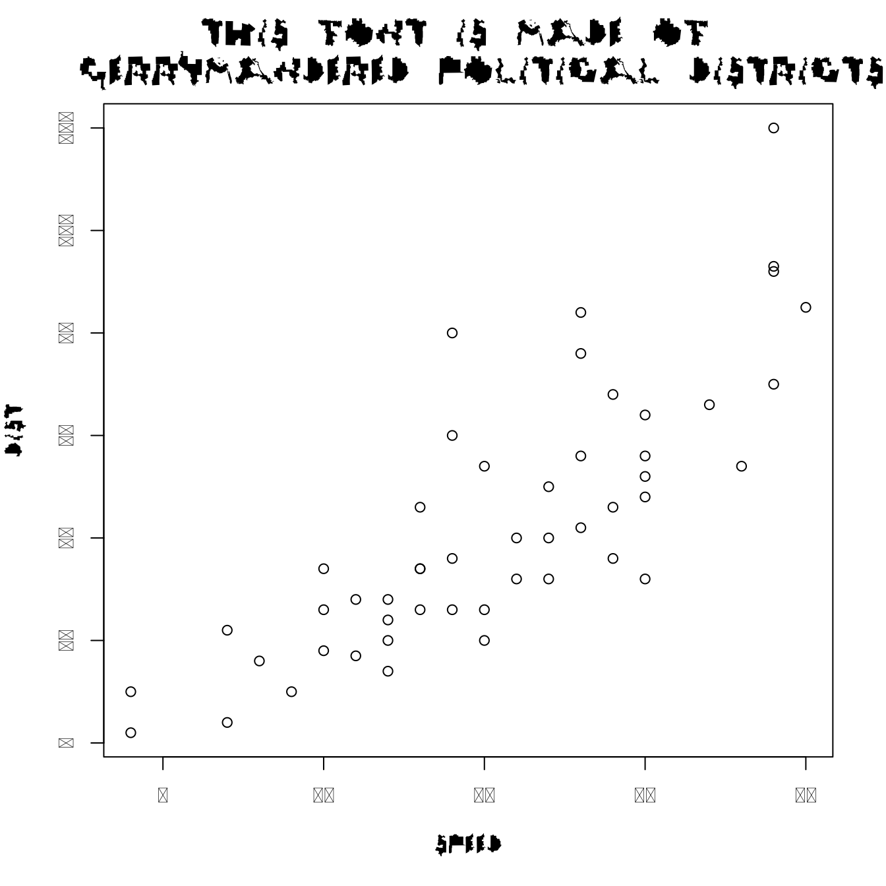
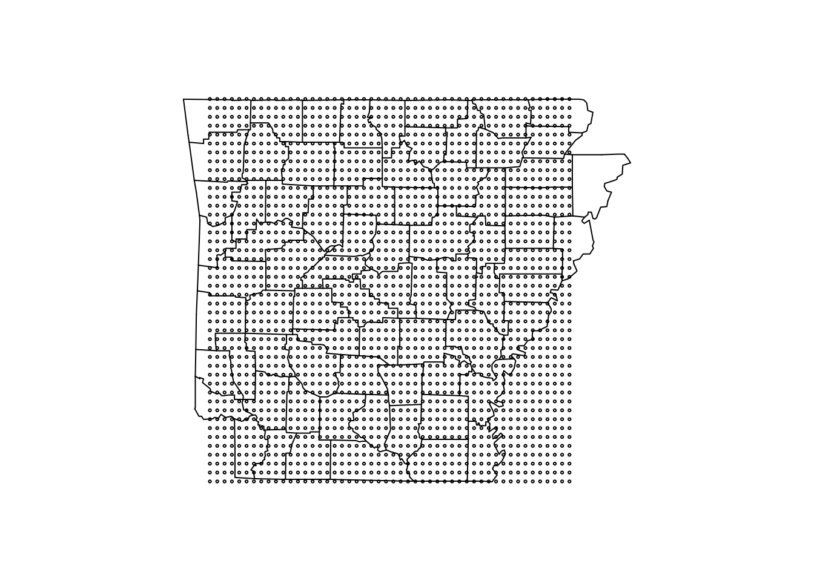
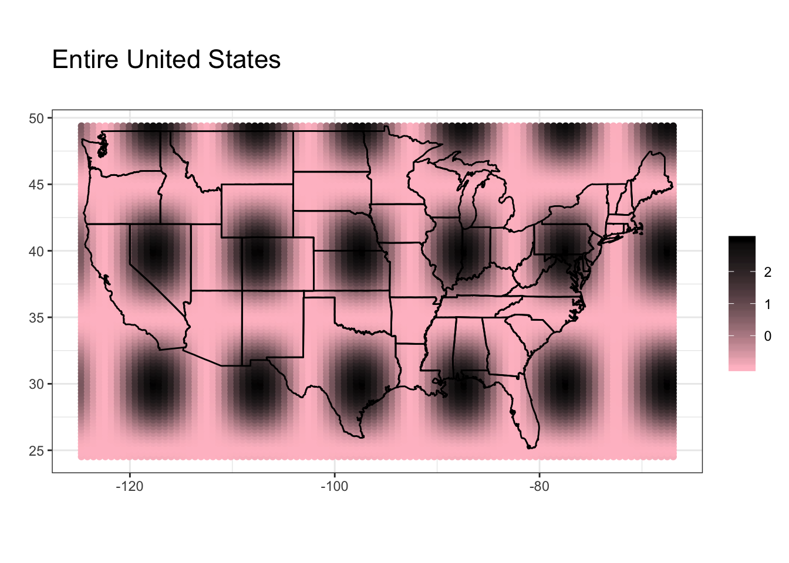
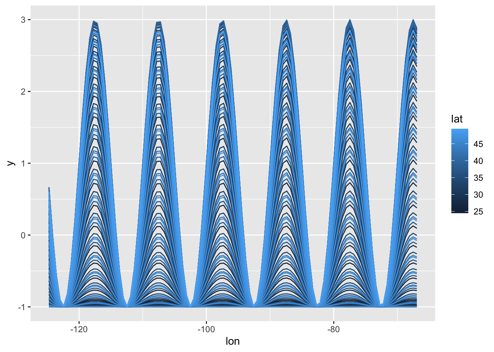
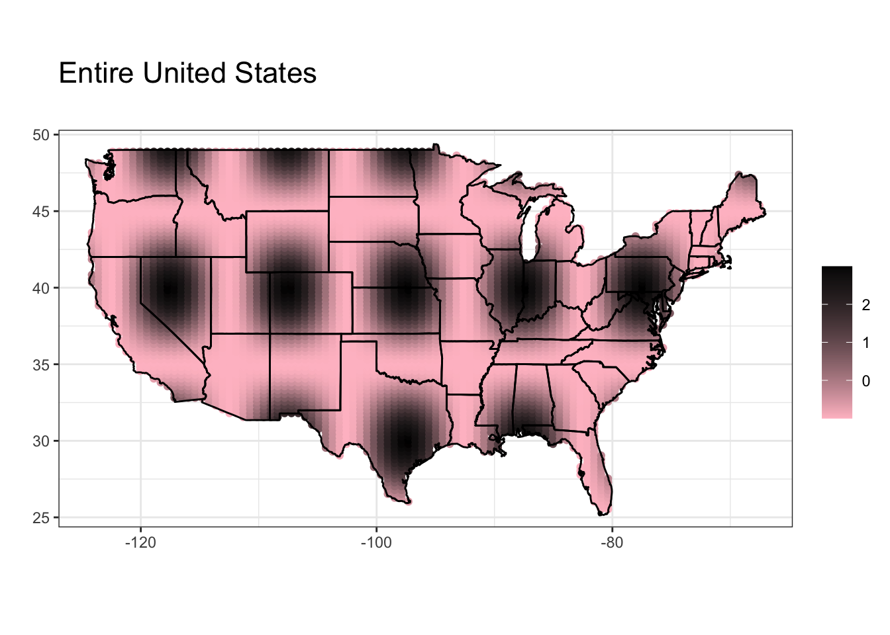
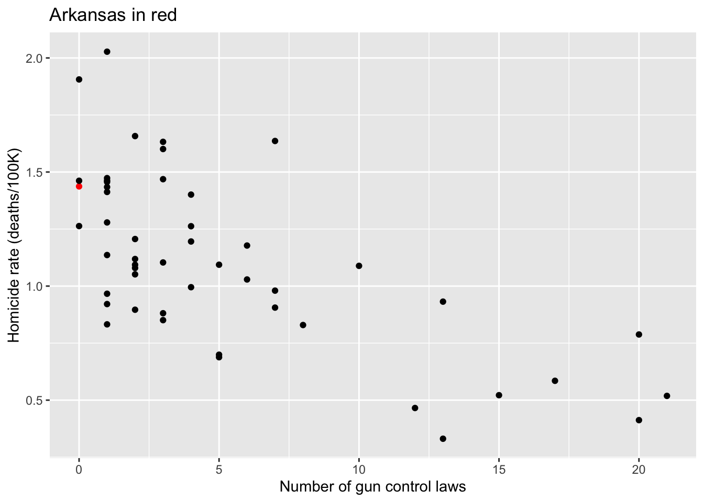
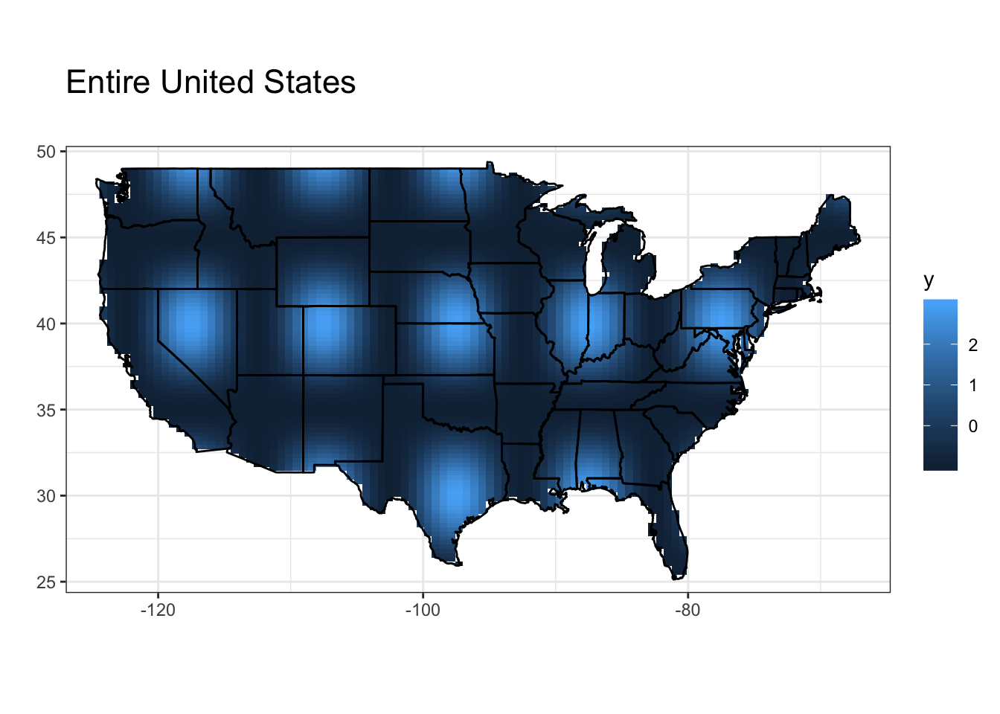
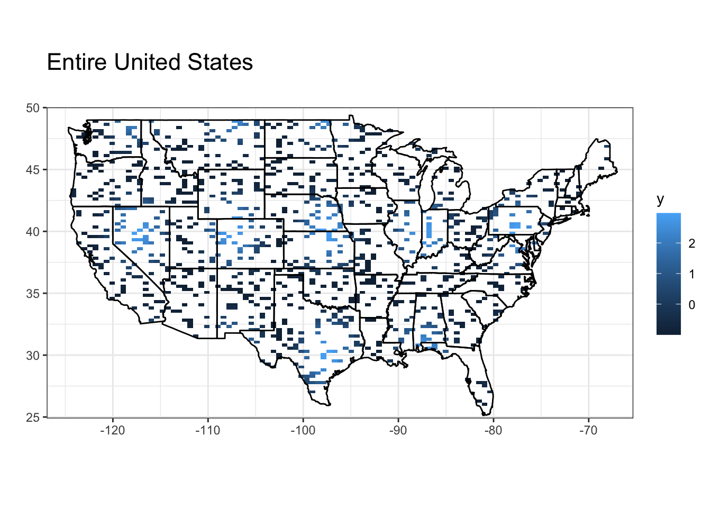
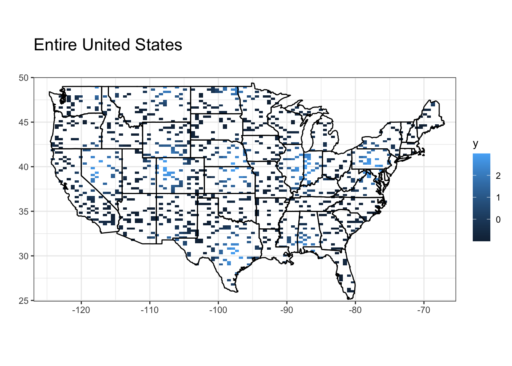
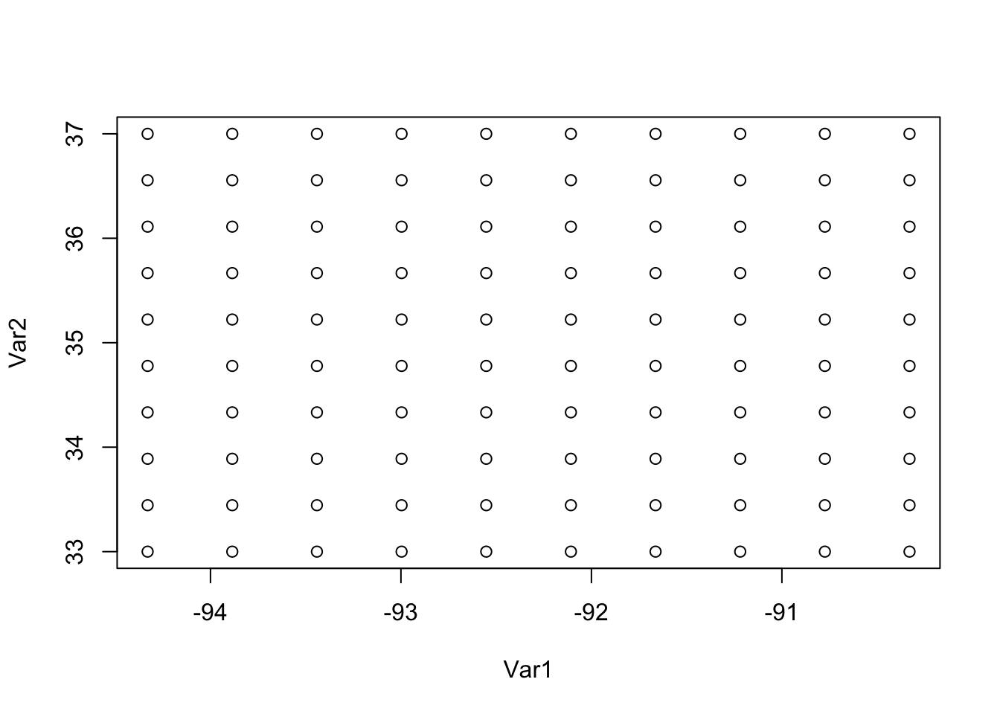

3 Day 3
3.1 Anouncements
Course audits
Show gitHub page for site https://github.com/jtipton25/STAT-5413
- Show how to download files and data
Example Gerrymandering
## Loading required package: sysfonts## Loading required package: showtextdbplot(cars, family = "myfont")
title(
main = "This Font is made of \n Gerrymandered Political Districts",
family = "myfont", cex.main = 1.5
)
3.2 Files for spatial data
Many different file types for spatial data
Typically data are in “flat files” like comma-seperated value (CSV) files
- “shapefiles” which can be read using rgdal or maptools packages
- “NetCDF” files cane be read using ncdf4 or RNetCDF
3.3 Textbook package
To install the data from the textbook, go to https://spacetimewithr.org/ and follow the link to the code.
Note that this package is relatively large because it contains a decent amount of spatial data.
##
## Attaching package: 'STRbook'## The following object is masked _by_ '.GlobalEnv':
##
## MOcounties3.4 Spatial Visualization
3.4.1 Spatial visualization using fields
- Simulate a process with some random locations
## Loading required package: spam## Loading required package: dotCall64## Loading required package: grid## Spam version 2.2-2 (2019-03-07) is loaded.
## Type 'help( Spam)' or 'demo( spam)' for a short introduction
## and overview of this package.
## Help for individual functions is also obtained by adding the
## suffix '.spam' to the function name, e.g. 'help( chol.spam)'.##
## Attaching package: 'spam'## The following objects are masked from 'package:base':
##
## backsolve, forwardsolve## Loading required package: maps##
## Attaching package: 'maps'## The following object is masked from 'package:purrr':
##
## map## See https://github.com/NCAR/Fields for
## an extensive vignette, other supplements and source code## longitude and latitude of approximately the center of Arkansas
lon_lat_center <- c(-92.33, 35.00)
n <- 1000
## simulate some random locations
lon <- runif(n, lon_lat_center[1] - 2, lon_lat_center[1] + 2)
lat <- runif(n, lon_lat_center[2] - 2, lon_lat_center[2] + 2)
y <- rnorm(n, lat + lon, .1)
plot(lon, lat)


- Simulate a process on a regular grid
n <- 50^2
## simulate locations on a grid
lon <- seq(lon_lat_center[1] - 2, lon_lat_center[1] + 2, length = sqrt(n))
lat <- seq(lon_lat_center[2] - 2, lon_lat_center[2] + 2, length = sqrt(n))
s <- expand.grid(lon, lat)
head(lon)## [1] -94.33000 -94.24837 -94.16673 -94.08510 -94.00347 -93.92184## [1] 33.00000 33.08163 33.16327 33.24490 33.32653 33.40816## Var1 Var2
## 1 -94.33000 33
## 2 -94.24837 33
## 3 -94.16673 33
## 4 -94.08510 33
## 5 -94.00347 33
## 6 -93.92184 33
## simulate some fake data with a north/south trend
y <- 120 - 1.5 * s[, 2] + matrix(rnorm(n), sqrt(n), sqrt(n))
image.plot(lon, lat, y, main = "Plot of simulated data")

image.plot(lon, lat, y, main = "Plot of simulated data")
contour(lon, lat, y, main = "Contour plot of simulated data", add = TRUE,
nlevels = 10)


## [1] "texas" "texas" "texas" "texas" "louisiana" "louisiana"## state
## arkansas louisiana mississippi missouri texas
## 1903 34 180 351 32## subset only points in arkansas
dat <- data.frame(
lon = s[, 1],
lat = s[, 2],
state = state
)
maps::map("county", "Arkansas")
dat %>%
subset(state == "arkansas") %>%
points(cex = 0.3)
Plot the simulated data with the county boundaries

## change the aspect ratio
image.plot(lon, lat, y, main = "Plot of simulated data", asp = 1.3)
maps::map("county", add = TRUE, lwd = 2)
3.4.2 Spatial visualization using fields
nx <- 100
ny <- 100
library(maps) # for map.where
# Corner of the USA
corners <- c(-124.733056, -66.947028, 24.520833, 49.384472)
# create grid
grid <- expand.grid(
seq(corners[1], corners[2], length = nx),
seq(corners[3], corners[4], length = ny)
)
dat <- data.frame(
lon = grid[, 1],
lat = grid[, 2],
inUS = ifelse(is.na(map.where("usa", x = grid[, 1], y = grid[, 2])), FALSE, TRUE)
)
## Plot only points in the us
dat %>%
subset(inUS) %>% ## this selects only the true values
ggplot(aes(x = lon, y = lat)) +
geom_point(size = 0.6, alpha = 0.5)
## Simulate some data over the grid
dat$y <- sin(2 * pi * dat$lon / 10) + cos(2 *pi * dat$lat / 10) +
sin(2 * pi * dat$lon / 10) * cos(2 *pi * dat$lat / 10)
## plot each of the responses grouped by latitude
dat %>%
ggplot(aes(x = lon, y = y, group = lat, color = lat)) +
geom_line()
## Function to generate maps
map_points <- function (dat,
color_low = "white", color_high = "darkred",
color_na = gray(0.9), zeroiswhite = FALSE,
xlim = NULL, ylim = NULL, zlim = NULL,
mainTitle = NULL, legendTitle = "") {
library(ggplot2)
## check if the data.fram dat contains the correct variables
if (is.null(dat$lon)) { stop('The data.frame dat must contain a "lon" variable') }
if (is.null(dat$lat)) { stop('The data.frame dat must contain a "lat" variable') }
if (is.null(dat$y)) { stop('The data.frame dat must contain a "y" variable') }
# Store the base data of the underlying map
states <- map_data("state")
# Set limits for x, y, z if not specified as parameters
if (is.null(xlim)) { xlim <- range(dat$lon, na.rm = TRUE) }
if (is.null(ylim)) { ylim <- range(dat$lat, na.rm = TRUE) }
if (is.null(zlim)) { zlim <- range(dat$y, na.rm = TRUE) }
# Create the plot
p <- ggplot(dat, aes(x = lon, y = lat)) +
theme_bw()
p <- p + theme(plot.title = element_text(size = rel(1.5)))
p <- p + geom_point(aes(colour = y))
## add in the map
p <- p + geom_polygon(data = states, aes(x = long, y = lat, group = group),
colour = "black", fill = NA)
## a 1.3 coordinate ratio is visually appealing
p <- p + coord_fixed(ratio = 1.3, xlim = xlim, ylim = ylim)
p <- p + labs(title = paste(mainTitle, "\n", sep=""), x = "", y = "")
if(zeroiswhite){
p <- p + scale_colour_gradient2(
low = color_low,
high = color_high,
na.value = color_na,
limits = zlim,
name = legendTitle
)
}
if(!zeroiswhite){
p <- p + scale_colour_gradient(
low = color_low,
high = color_high,
na.value = color_na,
limits = zlim,
name = legendTitle
)
}
return(p)
}## Let's make some plots
dat %>%
map_points(
color_low = "pink",
color_high = "black",
mainTitle = "Entire United States"
)
## Subset only the US
dat %>%
subset(inUS) %>%
map_points(
color_low = "pink",
color_high = "black",
mainTitle = "Entire United States"
)
## plot only a subset of points
dat %>%
subset(inUS) %>%
## sample 500 points at random
sample_n(500) %>%
map_points(
color_low = "pink",
color_high = "black",
zeroiswhite = TRUE,
mainTitle = "Entire United States"
)
## Truncate the southeastern US
dat %>%
subset(inUS) %>%
## sample 500 points at random
sample_n(500) %>%
map_points(
color_low = "pink",
color_high = "black",
zeroiswhite = TRUE,
xlim = c(-95, -75),
ylim = c(25, 37.5),
mainTitle = "Southeastern United States",
legendTitle = "Widgets"
)
Heatmaps can also be used for plotting. In general, there are two ggplot geoms that are useful for spatial data: geom_tile is good for irregularly spaced data, geom_raster is best for regularly spaced data as it is faster to process.
## Function to generate maps
map_heat <- function (dat,
color_low = "white", color_high = "darkred",
color_na = gray(0.9), zeroiswhite = FALSE,
xlim = NULL, ylim = NULL, zlim = NULL,
mainTitle = NULL, legendTitle = "",
geom = "raster") {
library(ggplot2)
## check if the data.fram dat contains the correct variables
if (is.null(dat$lon)) { stop('The data.frame dat must contain a "lon" variable') }
if (is.null(dat$lat)) { stop('The data.frame dat must contain a "lat" variable') }
if (is.null(dat$y)) { stop('The data.frame dat must contain a "y" variable') }
if (!(geom %in% c("raster", "tile"))) { stop('The only options for geom are "raster" or "tile"') }
# Store the base data of the underlying map
states <- map_data("state")
# Set limits for x, y, z if not specified as parameters
if (is.null(xlim)) { xlim <- range(dat$lon, na.rm = TRUE) }
if (is.null(ylim)) { ylim <- range(dat$lat, na.rm = TRUE) }
if (is.null(zlim)) { zlim <- range(dat$y, na.rm = TRUE) }
# Create the plot
p <- ggplot(dat, aes(x = lon, y = lat)) +
theme_bw()
p <- p + theme(plot.title = element_text(size = rel(1.5)))
if (geom == "raster") {
p <- p + geom_raster(aes(fill = y))
}
if (geom == "tile") {
p <- p + geom_tile(aes(fill = y))
}
## add in the map
p <- p + geom_polygon(data = states, aes(x = long, y = lat, group = group),
colour = "black", fill = NA)
## a 1.3 coordinate ratio is visually appealing
p <- p + coord_fixed(ratio = 1.3, xlim = xlim, ylim = ylim)
p <- p + labs(title = paste(mainTitle, "\n", sep=""), x = "", y = "")
if(zeroiswhite){
p <- p + scale_colour_gradient2(
low = color_low,
high = color_high,
na.value = color_na,
limits = zlim,
name = legendTitle
)
}
if(!zeroiswhite){
p <- p + scale_colour_gradient(
low = color_low,
high = color_high,
na.value = color_na,
limits = zlim,
name = legendTitle
)
}
return(p)
}## Subset only the US
dat %>%
subset(inUS) %>%
map_heat(
color_low = "blue",
color_high = "yellow",
mainTitle = "Entire United States",
geom = "raster"
)## Subset only the US
dat %>%
subset(inUS) %>%
map_heat(
color_low = "blue",
color_high = "yellow",
mainTitle = "Entire United States",
geom = "tile"
)
## Subsample the data
dat %>%
subset(inUS) %>%
sample_n(1000) %>%
map_heat(
color_low = "blue",
color_high = "green",
mainTitle = "Entire United States",
geom = "raster"
)## Warning in f(...): Raster pixels are placed at uneven horizontal intervals and
## will be shifted. Consider using geom_tile() instead.## Warning in f(...): Raster pixels are placed at uneven vertical intervals and
## will be shifted. Consider using geom_tile() instead.
## Subsample the data
dat %>%
subset(inUS) %>%
sample_n(1000) %>%
map_heat(
color_low = "pink",
color_high = "black",
mainTitle = "Entire United States",
geom = "tile"
)
- Plotting spatial data using google maps
## longitude and latitude of approximately the center of Arkansas
arkansas_center <- c(-92.33, 35.00)
library(maps)
library(ggplot2)
library(ggmap)## Google's Terms of Service: https://cloud.google.com/maps-platform/terms/.## Please cite ggmap if you use it! See citation("ggmap") for details.lon <- arkansas_center[1] + seq(-2, 2, length = 10)
lat <- arkansas_center[2] + seq(-2, 2, length = 10)
s <- expand.grid(lon, lat)
head(lon)## [1] -94.33000 -93.88556 -93.44111 -92.99667 -92.55222 -92.10778## [1] 33.00000 33.44444 33.88889 34.33333 34.77778 35.22222## 'data.frame': 100 obs. of 2 variables:
## $ Var1: num -94.3 -93.9 -93.4 -93 -92.6 ...
## $ Var2: num 33 33 33 33 33 33 33 33 33 33 ...
## - attr(*, "out.attrs")=List of 2
## ..$ dim : int 10 10
## ..$ dimnames:List of 2
## .. ..$ Var1: chr "Var1=-94.33000" "Var1=-93.88556" "Var1=-93.44111" "Var1=-92.99667" ...
## .. ..$ Var2: chr "Var2=33.00000" "Var2=33.44444" "Var2=33.88889" "Var2=34.33333" ...
Using Google maps requires registration of a key. See https://www.littlemissdata.com/blog/maps for details.
- Plotting areal data The example is from https://www4.stat.ncsu.edu/~reich/SpatialStats/code/Guns.pdf taken from https://www.thelancet.com/journals/lancet/article/PIIS0140-6736(15)01026-0/fulltext
## process the guns data
# load(here::here("data", "guns.RData"))
# names(Y)[1:5]
# region <- tolower(names(Y))
# region[1:5]
# rate <- 10000*Y/N
# numlaws <- rowSums(X)
# crime <- data.frame(Y=Y,N=N,rate=rate,X=X,numlaws,region=region)
# dat <- data.frame(
# deaths_2010 = Y,
# population = N,
# deaths_per_10000 = Z[, 1],
# firearm_quartile = Z[, 2],
# unemployment_quartile = Z[, 3],
# non_firearm_homocide = Z[, 4],
# firearm_export_quartile = Z[, 5],
# numlaws = apply(X, 1, sum),
# region = region
# )
# save(dat, file = here::here("data", "guns_processed.RData"))
load(here::here("data", "guns_processed.RData"))
## mutate a death rate
dat <- dat %>%
mutate(rate = 10000 * deaths_2010 / population)
dat %>%
ggplot(aes(x = numlaws, y = rate, color = region == "arkansas")) +
geom_point() +
scale_color_manual(values = c("black", "red")) +
xlab("Number of gun control laws") +
ylab("Homicide rate (deaths/100K)") +
ggtitle("Arkansas in red") +
theme(legend.position = "none")
##
## Call:
## lm(formula = rate ~ numlaws, data = dat)
##
## Residuals:
## Min 1Q Median 3Q Max
## -0.46715 -0.16720 -0.02576 0.16171 0.72809
##
## Coefficients:
## Estimate Std. Error t value Pr(>|t|)
## (Intercept) 1.344693 0.055145 24.385 < 2e-16 ***
## numlaws -0.045276 0.007302 -6.201 1.24e-07 ***
## ---
## Signif. codes: 0 '***' 0.001 '**' 0.01 '*' 0.05 '.' 0.1 ' ' 1
##
## Residual standard error: 0.2867 on 48 degrees of freedom
## Multiple R-squared: 0.4448, Adjusted R-squared: 0.4332
## F-statistic: 38.45 on 1 and 48 DF, p-value: 1.236e-07## long lat group order region subregion
## 1 -87.46201 30.38968 1 1 alabama <NA>
## 2 -87.48493 30.37249 1 2 alabama <NA>
## 3 -87.52503 30.37249 1 3 alabama <NA>
## 4 -87.53076 30.33239 1 4 alabama <NA>
## 5 -87.57087 30.32665 1 5 alabama <NA>
## 6 -87.58806 30.32665 1 6 alabama <NA>gg <- ggplot()
gg <- gg + geom_map(data = us, map = us,
aes(x = long, y = lat, map_id = region),
fill = "#ffffff", color = "#ffffff", size = 0.15)## Warning: Ignoring unknown aesthetics: x, y
gg <- gg + geom_map(
data = dat,
map = us,
aes(fill = rate, map_id = region),
color = "#ffffff", size = 0.15
)
gg <- gg + scale_fill_continuous(
low = 'thistle2',
high = 'darkred',
guide= 'colorbar',
name = "Deaths/100K"
)
gg <- gg + labs(x = NULL, y = NULL, title = "Homicide rates")
gg <- gg + coord_map("albers", lat0 = 39, lat1 = 45)
gg <- gg + theme(panel.border = element_blank())
gg <- gg + theme(panel.background = element_blank())
gg <- gg + theme(axis.ticks = element_blank())
gg <- gg + theme(axis.text = element_blank())
ggThe map looks right according to
http://www.deathpenaltyinfo.org/murder-rates-nationally-and-state#MRord
3.4.3 In Class Activity:
From Lab 2.1 on the textbook site
## Wikle, C. K., Zammit-Mangion, A., and Cressie, N. (2019),
## Spatio-Temporal Statistics with R, Boca Raton, FL: Chapman & Hall/CRC
## Copyright (c) 2019 Wikle, Zammit-Mangion, Cressie
##
## This program is free software; you can redistribute it and/or
## modify it under the terms of the GNU General Public License
## as published by the Free Software Foundation; either version 2
## of the License, or (at your option) any later version.
##
## This program is distributed in the hope that it will be useful,
## but WITHOUT ANY WARRANTY; without even the implied warranty of
## MERCHANTABILITY or FITNESS FOR A PARTICULAR PURPOSE. See the
## GNU General Public License for more details.
library("dplyr")
library("tidyr")
library("STRbook")
## ------------------------------------------------------------------------
locs <- read.table(system.file("extdata", "Stationinfo.dat",
package = "STRbook"),
col.names = c("id", "lat", "lon"))
Times <- read.table(system.file("extdata", "Times_1990.dat",
package = "STRbook"),
col.names = c("julian", "year", "month", "day"))
Tmax <- read.table(system.file("extdata", "Tmax_1990.dat",
package = "STRbook"))
## ------------------------------------------------------------------------
names(Tmax) <- locs$id
## ------------------------------------------------------------------------
Tmax <- cbind(Times, Tmax)
head(names(Tmax), 10)
## ------------------------------------------------------------------------
Tmax_long <- gather(Tmax, id, z, -julian, -year, -month, -day)
head(Tmax_long)
## ------------------------------------------------------------------------
Tmax_long$id <- as.integer(Tmax_long$id)
## -----------------------------------------------------------
nrow(Tmax_long)
Tmax_long <- filter(Tmax_long, !(z <= -9998))
nrow(Tmax_long)
## ------------------------------------------------------------------------
Tmax_long <- mutate(Tmax_long, proc = "Tmax")
head(Tmax_long)
## ------------------------------------------------------------------------
data(Tmin_long, package = "STRbook")
data(TDP_long, package = "STRbook")
data(Precip_long, package = "STRbook")
## ------------------------------------------------------------------------
NOAA_df_1990 <- rbind(Tmax_long, Tmin_long, TDP_long, Precip_long)
## ------------------------------------------------------------------------
summ <- group_by(NOAA_df_1990, year, proc) %>% # groupings
summarise(mean_proc = mean(z)) # operation
## ------------------------------------------------------------------------
NOAA_precip <- filter(NOAA_df_1990, proc == "Precip" & month == 6)
summ <- group_by(NOAA_precip, year, id) %>%
summarise(days_no_precip = sum(z == 0))
head(summ)
## ------------------------------------------------------------------------
median(summ$days_no_precip)
## -------------------------------------------------------------
grps <- group_by(NOAA_precip, year, id)
summ <- summarise(grps, days_no_precip = sum(z == 0))
## ------------------------------------------------------------------------
NOAA_df_sorted <- arrange(NOAA_df_1990, julian, id)
## ------------------------------------------------------------------------
df1 <- select(NOAA_df_1990, julian, z)
df2 <- select(NOAA_df_1990, -julian)
## ------------------------------------------------------------------------
NOAA_df_1990 <- left_join(NOAA_df_1990, locs, by = "id")
## ------------------------------------------------------------------------
Tmax_long_sel <- select(Tmax_long, julian, id, z)
Tmax_wide <- spread(Tmax_long_sel, id, z)
dim(Tmax_wide)
## ------------------------------------------------------------------------
M <- select(Tmax_wide, -julian) %>% as.matrix()
## -----------------------------------------------------------
library("sp")
library("spacetime")
## ------------------------------------------------------------------------
NOAA_df_1990$date <- with(NOAA_df_1990,
paste(year, month, day, sep = "-"))
head(NOAA_df_1990$date, 4) # show first four elements
## ------------------------------------------------------------------------
NOAA_df_1990$date <- as.Date(NOAA_df_1990$date)
class(NOAA_df_1990$date)
## ------------------------------------------------------------------------
Tmax_long2 <- filter(NOAA_df_1990, proc == "Tmax")
STObj <- stConstruct(x = Tmax_long2, # data set
space = c("lon", "lat"), # spatial fields
time = "date") # time field
class(STObj)
## ------------------------------------------------------------------------
spat_part <- SpatialPoints(coords = Tmax_long2[, c("lon", "lat")])
temp_part <- Tmax_long2$date
STObj2 <- STIDF(sp = spat_part,
time = temp_part,
data = select(Tmax_long2, -date, -lon, -lat))
class(STObj2)
## ------------------------------------------------------------------------
spat_part <- SpatialPoints(coords = locs[, c("lon", "lat")])
temp_part <- with(Times,
paste(year, month, day, sep = "-"))
temp_part <- as.Date(temp_part)
## ------------------------------------------------------------------------
Tmax_long3 <- gather(Tmax, id, z, -julian, -year, -month, -day)
## ------------------------------------------------------------------------
Tmax_long3$id <- as.integer(Tmax_long3$id)
Tmax_long3 <- arrange(Tmax_long3,julian,id)
## ------------------------------------------------------------------------
all(unique(Tmax_long3$id) == locs$id)
## ------------------------------------------------------------------------
STObj3 <- STFDF(sp = spat_part,
time = temp_part,
data = Tmax_long3)
class(STObj3)
## ------------------------------------------------------------------------
proj4string(STObj3) <- CRS("+proj=longlat +ellps=WGS84")
## ------------------------------------------------------------------------
STObj3$z[STObj3$z == -9999] <- NA